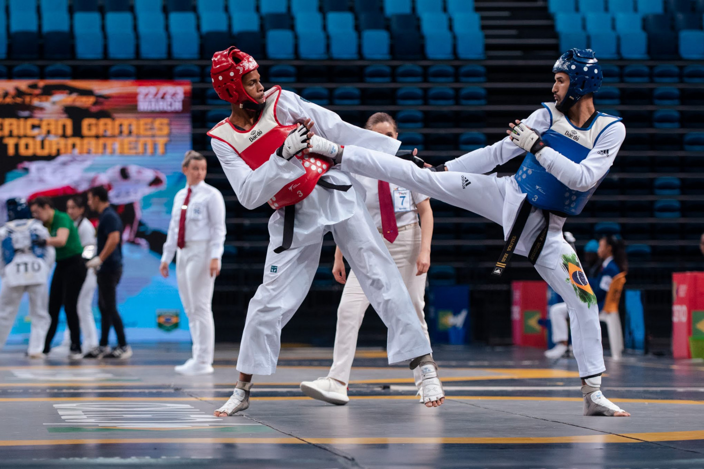
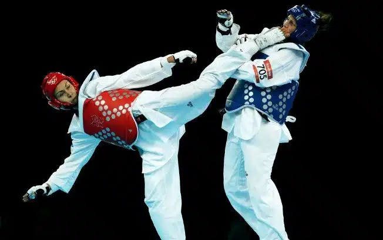
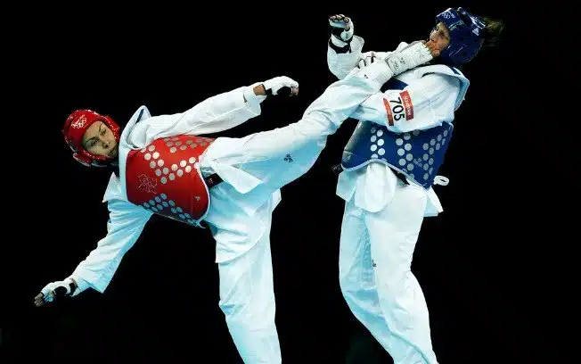

Taekwondo🥋
História
O taekwondo é uma arte marcial de origem coreana que utiliza movimentos de ataque e defesa com os pés e as mãos.
O combate é feito em uma área de 8 m² com duração três rounds de dois minutos.
O taekwondo é mais que uma luta corporal, ele representa estilos de vida. Essa arte marcial possui princípios, deveres, valores filosofia e uma cultura baseada em respeito, com objetivo de lutar por um lugar melhor para todos.
Ele foi desenvolvido pelo mestre sul-coreano Choi Hong Hi, em 1955. Em coreano, a palavra significa "caminho dos pés e das mãos" através da força da mente e todas as suas atividades estão baseadas em táticas
O Taekwondo só foi trazido ao Brasil nos anos 70, e desde essa época tem se espalhado por outros países, sendo que se tornou um esporte Olímpico em 1988.
Na luta são válidos golpes de braço (socos) e de pernas (chutes). Não é permitido agarrar o adversário.
Além disso, o taekwondo adota 5 princípios que devem ser seguidos pelos seus participantes:
Cortesia
Integridade
Perseverança
Auto-controle
Espírito Indomável
 
Faixas🥋

Faixas🥋